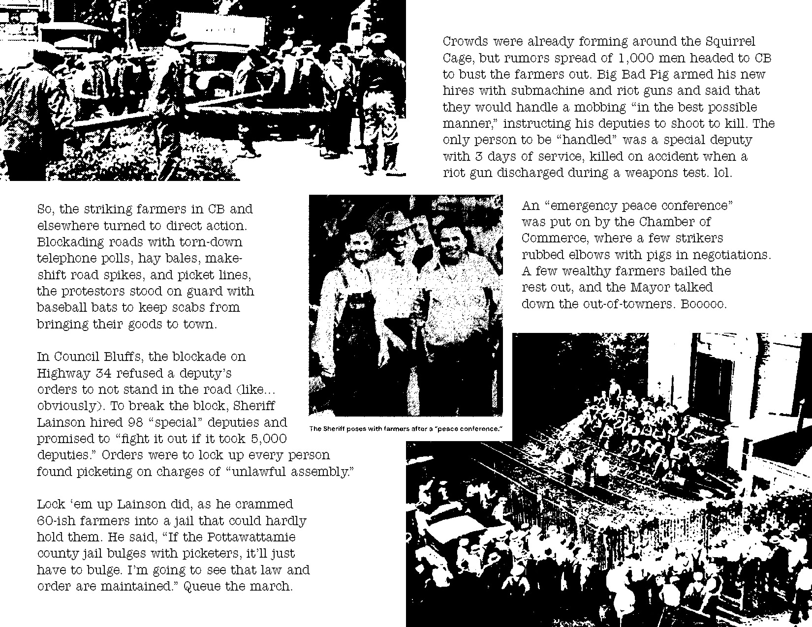
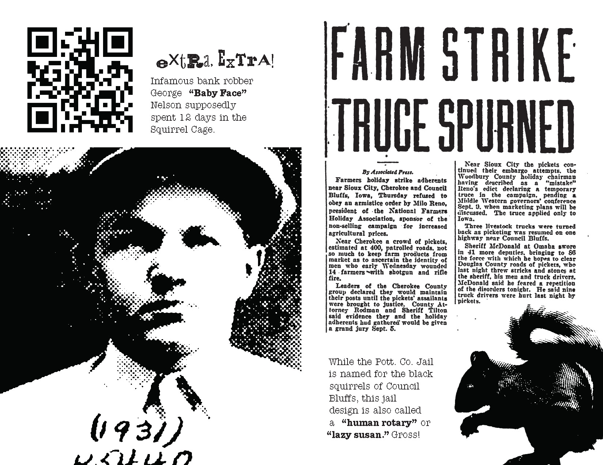
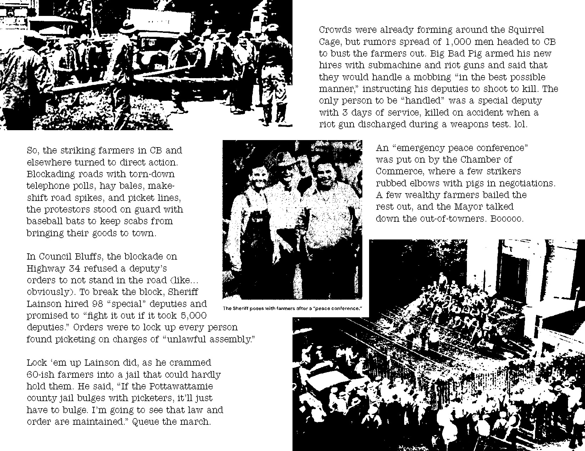
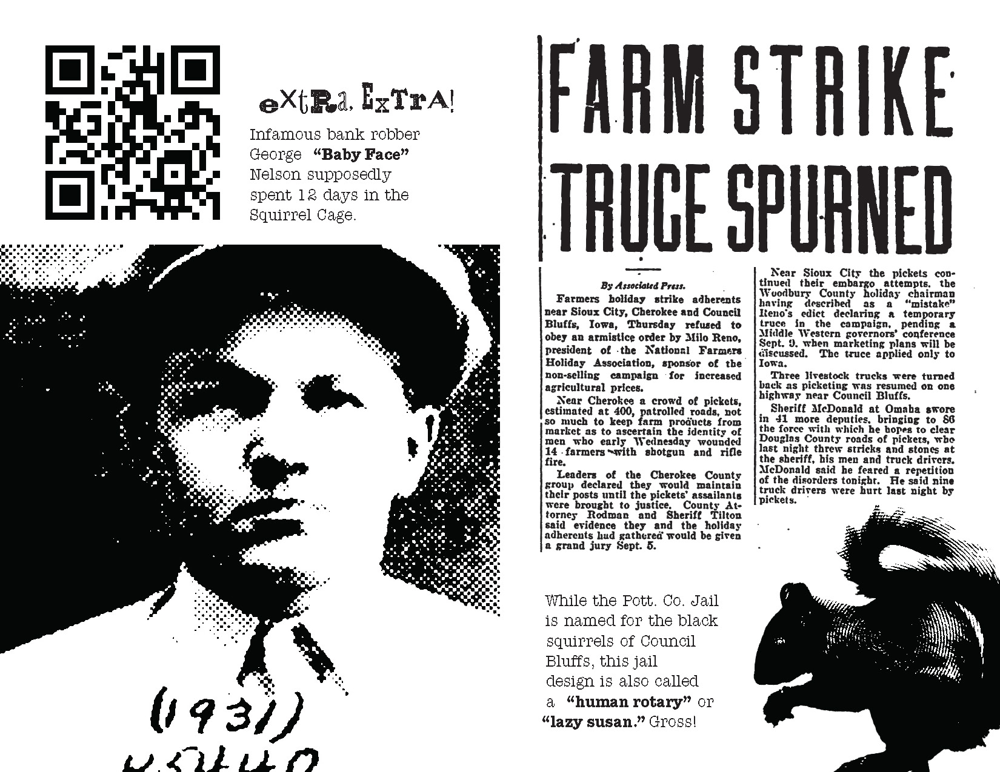

The Squirrel Cage Jail
 




Front Matter
A rotating steel drum of pie-shaped prison cells inside a cylindrical cage. On each of three floors, there’s only one way in… one way out. Is this a pitch for a Saw trap? Nah, this is the Squirrel Cage Jail.
It was built in Council Bluffs, IA and operated as the Pottawattamie county jail from 1885 to 1969, 84 years too long. Only 18 horrific prison carousels like this were ever built, and the Squirrel Cage is the biggest. Now, they do elementary school field trips and let high-schoolers take grad pics in solitary (which, by the way, is literally a 2’x2’ metal closet).
W.T.F.
As if caging human beings wasn’t depraved enough, William H. Brown and Benjamin F. Haugh of Indianapolis, Indiana had the bright idea circa 1881 to put incarcerated people in a nightmarish spinning death machine for “maximum security” and “minimum jailer attention.”
In their own words, “The object of our invention is to produce a jail in which prisoners can be controlled without the necessity of a personal contact between them and the jailer.” Holy-fucking-shit-ballz.
Commissioned by The Pottawattamie County Board, Architects Eckel and Mann built the rotating Pott. Co. jail to look like a cushy victorian-style house. Trying to hide the terrors within, no doubt.
Amputations & Escapees
The jail was supposed to be “escape-proof,” but delinquent ingenuity never fails to impress. People escaped through the ceiling, walls, toilet system, and once through the front door. One escapee left a note hoping their jailbreak would convince the county to build a new jail.
It’s no wonder there were repeated escape attempts, given the unparalleled brutality of the cage. Limbs often got caught up in the bars while the cell-block was turning; some people stuck arms out on purpose for a chance at the relative luxury of the infirmary. One legendary jailbird jammed the mechanism with his prosthetic wooden leg to piss off the jailer.
Can this shit get any worse?
You bet your ass it can! During the jail’s 8 decade run it was condemned 22 times. And kept running. It was first built with no power, no water, and no heat, save for buckets of coal. Depending on where your cell fell in the rotation, you might not have had a window.
The 90,000+ pound cell-block was rotated by hand crank. Even worse, they built the thing on a water table so it constantly went out of alignment. The final nail in the coffin came when someone died in their cell and their body couldn’t be retrieved for 2 days because the mechanism was busted. That happened in 1960, and even though the jail quit turning, it didn’t close for good for another 9 years.
Child-friendly!
Pre-CPS, the Sheriff detained children at the jail if their parents died or committed a crime, until someone else took custody. The youngest kid on record at the Squirrel Cage was only 3 years old.
The tradition of exposing youngsters to the brutality of the carceral system persists to the modern day. In third grade, I took a field trip to the Squirrel Cage Jail as part of a unit on Council Bluffs Historical Landmarks. I distinctly remember they had a prop arm sticking through the bars.
I tried desperately to find the drawing of the jail I made following this third grade field trip, but alas, it’s lost to time. Here’s the accompanying homework instead.
A slice of protest history
haha get it? 'cause the cells are shaped like pie?
In the summer of 1932, a thousand-person march of striking farmers made their way to Council Bluffs to attempt a jail-break of the “escape-proof” Squirrel Cage. Though they didn’t actually pull it off, or even make it to town before being intercepted by the Mayor, the story is worth knowing and the details are as fucked as you might expect.
To set the stage: The economy is in the toilet and farmers are withholding grain, milk, and produce from market to call attention to their financial woes. Scabs do what scabs do, and so the effectiveness of the strike was questionable at best. The most anyone seemed to get out of it was media attention.
So, the striking farmers in CB and elsewhere turned to direct action. Blockading roads with torn-down telephone polls, hay bales, make-shift road spikes, and picket lines, the protestors stood on guard with baseball bats to keep scabs from bringing their goods to town.
In Council Bluffs, the blockade on Highway 34 refused a deputy’s orders to not stand in the road (like... obviously). To break the block, Sheriff Lainson hired 98 “special” deputies and promised to “fight it out if it took 5,000 deputies.” Orders were to lock up every person found picketing on charges of “unlawful assembly.”
Lock ‘em up Lainson did, as he crammed 60-ish farmers into a jail that could hardly hold them. He said, “If the Pottawattamie county jail bulges with picketers, it’ll just have to bulge. I’m going to see that law and order are maintained.” Queue the march.
Crowds were already forming around the Squirrel Cage, but rumors spread of 1,000 men headed to CB to bust the farmers out. Big Bad Pig armed his new hires with submachine and riot guns and said that they would handle a mobbing “in the best possible manner,” instructing his deputies to shoot to kill. The only person to be “handled” was a special deputy with 3 days of service, killed on accident when a riot gun discharged during a weapons test. lol.
An “emergency peace conference” was put on by the Chamber of Commerce, where a few strikers rubbed elbows with pigs in negotiations. A few wealthy farmers bailed the rest out, and the Mayor talked down the out-of-towners. Booooo.
The Militant, 1932
I found (and excerpted) this article from a 1932 issue of The Militant that positions the Council Bluffs strike in the broader context of the Farm Strike and the labor movement. Enjoy.
«Farmers Holiday» in lowa
A New and Militant Type of Middle Class Revolt